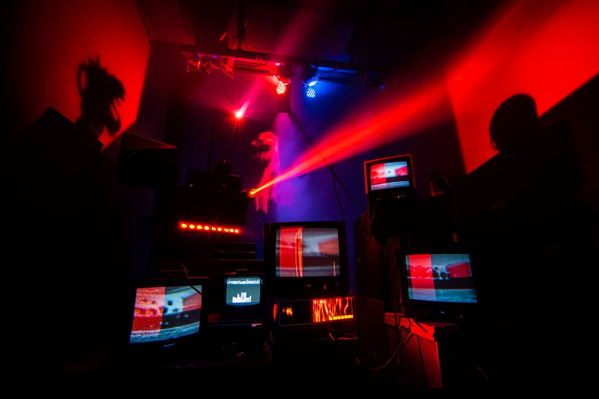
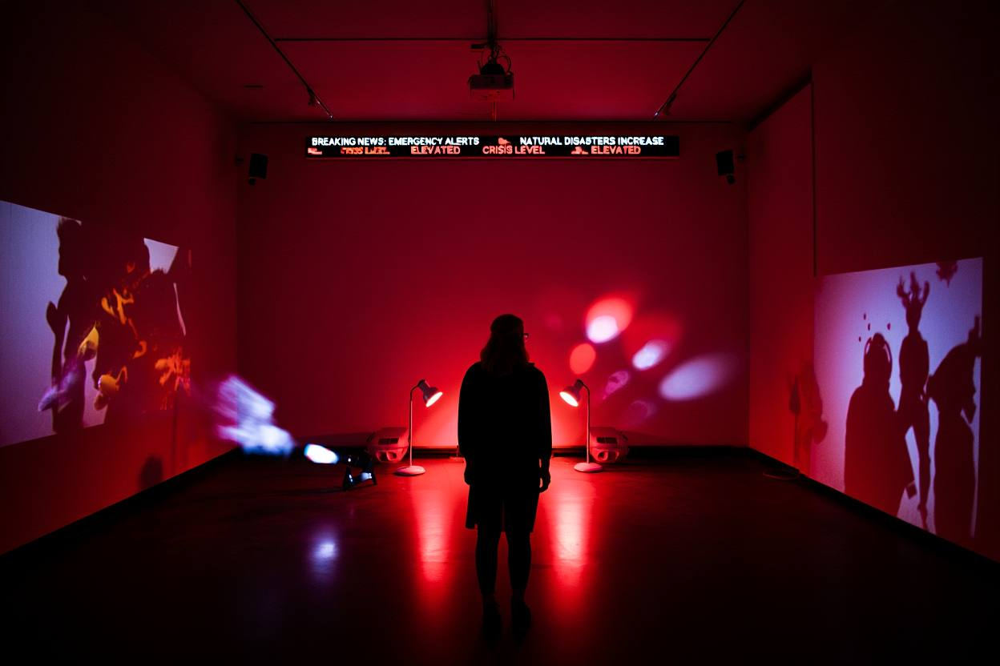

Тревожная комната Anxious Room · комната


Идея
Замкнутое индустриальное пространство в режиме бесконечного сбоя. Работа про изоляцию и технологическое давление.
Объект
Комната с фактурой холодного бетона. Свет в трёх цветах: низкий красный источник, белый луч из центра потолка, темнота вокруг. В углу стопка старых телевизоров без изображения, красно-белый глитч. По дальней стене бегущая строка: SYSTEM FAILURE // EMERGENCY // DATA BREACH.
Четыре регулятора меняют глубину красного, силу белого луча, скорость строки и частоту мерцания.